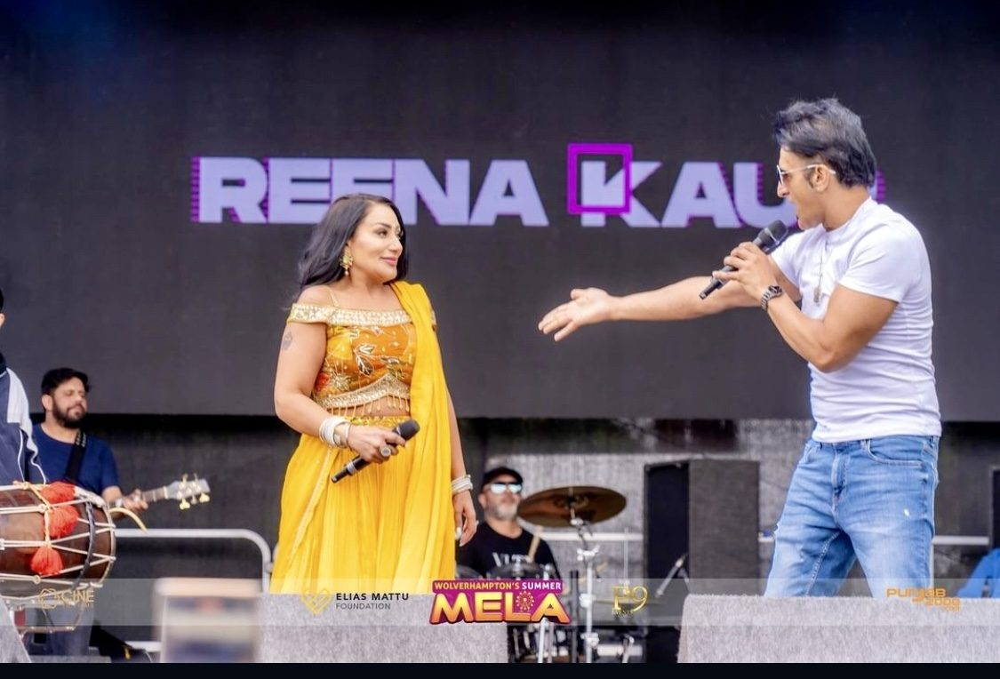
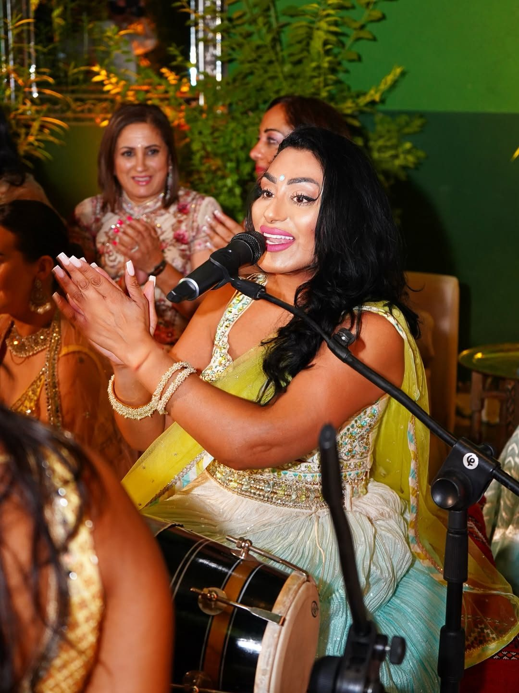
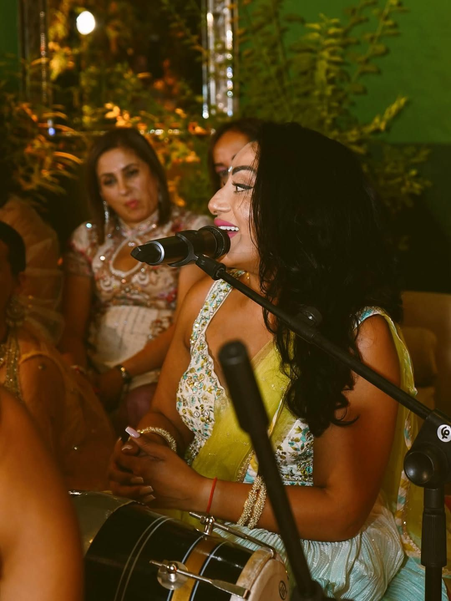

PROFESSIONAL TRADITIONAL VOCALS
Punjabi Folk Singers for Weddings & Events
A live Punjabi singer for your event — Punjabi folk, Pakistani classics, Bollywood and fusion, led by Reena Kaur.
A Punjabi folk singer performs the traditional song repertoire of Punjab live — the folk standards, wedding songs and boliyan that a recorded playlist cannot carry. We supply professional Punjabi singers led by Reena Kaur for weddings, Sangeet nights, receptions, melas and private events across the UK and internationally.

Why live folk singing changes the room
A DJ set and a live folk singer do different jobs. A DJ keeps a dancefloor moving. A folk singer holds a room’s attention — the older guests who came for the tradition, the younger ones who know the chorus without knowing why, the family members who get named in the middle of a verse.
Live singing is also responsive. The set can stretch when the room is with you and tighten when the schedule slips, which is not something a fixed playlist can do.

The repertoire
- Traditional Punjabi folk songs, including the wedding repertoire and boliyan.
- Pakistani classics.
- Bollywood, from the standards through to current releases.
- Modern fusion, for rooms that want the tradition and the contemporary sound together.
- Custom song selections, agreed with you before the day.

Where folk singers fit in a wedding
Most commonly the Sangeet or dholki night, where singing is the main event. A Punjabi wedding singer also works well during a reception’s seated portion, at a Mehndi, at a Jago, and as a live set before a DJ takes over for the night. If you are looking for a Punjabi singer for a wedding specifically, our Punjabi wedding entertainment page covers the whole week.
If you are running several events across a wedding week, it is worth talking about them together — the repertoire can be planned so the nights do not repeat each other.
Beyond weddings
We book Punjabi singers for events of every kind — melas and cultural festivals, community and charity events, corporate and private functions, and concert bills. Reena Kaur has performed at events including Wolverhampton’s Summer Mela, and the same line-up scales from a private function room to a festival stage.
Planning the set around your running order
The set is planned against your schedule, not dropped on top of it. Weddings run late, speeches overrun and caterers need their window, and a live performance has to absorb that without the room noticing.
So the useful conversation before the day is not only which songs you want. It is where the performance sits in the running order, who else needs the room and the sound system, and what happens either side of the set. We coordinate that with your venue and whoever is running the day, so the performance starts when it should.
If you have a planner or coordinator, put us in touch with them directly — it removes a step and it is usually faster than relaying details through the family.
Sound system and what we bring
A professional sound system is included in the booking and we bring and set it up ourselves, scaled to the room. You do not need to hire a PA separately or rely on the venue’s ceiling speakers, which are built for announcements rather than for a live Punjabi singer.
All we normally need is a standard power supply and somewhere to stand. If your venue has its own system, a noise limiter, or a restriction on set-up times, tell us when you enquire and we will deal with the venue directly. Where another act or a DJ is sharing the night, we agree in advance who is providing what, so there is no second PA sitting unused in a corridor.
Travel
We travel across the UK and internationally. Travel costs are worked into the quote up front, so the figure you are given is the figure you pay.
Your line-up
The line-up is chosen for the booking rather than taken off a shelf. We bring as many performers as the event calls for, and the team is picked to suit the style and scale of your celebration.
Pricing and booking
Every event is quoted individually. Pricing is bespoke and there is no fixed price list, because two bookings that both say “Punjabi singer” can be completely different jobs. What the quote is built from:
- Event type — a Sangeet where the singing is the entire evening is a different booking from a half-hour set inside a reception.
- Number of performers — a solo Punjabi singer, or a full line-up with accompanying musicians and dhol.
- Performance duration — how long you need us for, and whether that is one continuous set or several across the night.
- Date — peak wedding-season Saturdays are the most contested dates in the calendar.
- Location and venue — including access, set-up time and whether the room has its own system.
- Equipment — the sound system we bring, scaled to the size of the room.
- Travel — worked in up front, UK or international.
Tell us what you are planning and we will put a tailored quote together for it.
For weddings and major events we recommend booking around twelve months ahead, since prime dates go early. Shorter notice is always worth asking about — we accommodate last-minute bookings wherever availability allows.
Get a quote for Punjabi Folk SingersFrequently asked questions
What do Punjabi folk singers perform?
Traditional Punjabi folk songs including the wedding repertoire and boliyan, alongside Pakistani classics, Bollywood and modern fusion. The set list is agreed with you in advance and custom song selections are standard.
How many singers will perform at our event?
The line-up is chosen for the booking. We bring as many performers as the event calls for, matched to the style and scale of the celebration, so it is decided when we discuss your requirements.
Can you perform alongside a DJ?
Yes. A common format is a live folk set earlier in the evening with a DJ taking over afterwards. We provide both, so the handover is planned rather than improvised.
Do you provide the sound system?
Yes, professional sound equipment is included and set up by us.
Do you perform outside weddings?
Yes — melas, cultural festivals, community and charity events, corporate functions, private parties and concert bills.
How much does it cost to hire Punjabi folk singers?
Pricing depends on the event type, the location, the date, the number of performers, the performance duration, the equipment needed and the travel involved, so there is no fixed price list. Send us the details of your event and we will put together a tailored quote.
Ready to talk about your event?
Tell us the date, the venue and what you have in mind, and we will put together a bespoke quote.
Get a quote